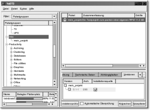

|
|
|
 17.3.2 Ein eigenes RPM-Paket erstellen
|
||||||||||||||||||||||||||||||||||||||||||||||||||||||||||||||||||||||||||||||||||||||||||||||||||||||||||||||||||||||||||||||||||||||||||||||||||||||||||||||||||||||||||||||||||||||||||||||||||||||||||||||||||||||||||||||||||||||||||||||||||||||||||||||||
| Schlüsselwort | Muss vorhanden sein | Bedeutung |
| Summary | ja | Kurzbeschreibung des Paketes |
| Name | ja | Name des Programms – dieser Eintrag wird beim Label des Pakets und im Paketdateinamen verwendet. |
| Version | ja | Die Versionsnummer des Pakets – dieser Eintrag wird beim Label des Pakets und dem Paketdateinamen verwendet. |
| Release | ja | Damit geben Sie an, wie häufig das Programm in der aktuellen Form als RPM-Paket verpackt wurde (oder kurz: die Versionsnummer der Specfile). |
| Copyright | ja | Art der Lizenz, unter der das Paket verbreitet wird/werden darf (z. B. (L)GPL, Artistic, BSD, MIT etc.). |
| Group | ja | Hier lässt sich die Software in eine bestimmte Kategorie einordnen (Grafik, Editor, Spiel ...). |
| Source | nein | Der Name (oder auch die URL) der Quelldatei, von wo diese bezogen wurde |
| URL | nein | Wo sind weitere Informationen zu dieser Software zu finden, z. B. Homepage des Projektes? |
| Distribution | nein | Für welche Distribution ist das Paket ausgelegt? Geben Sie sie hier an (SUSE x.x, Red Hat x.x ...). |
| Vendor | nein | Name der Firma oder des Urhebers, der dieses Softwarepaket vertreibt |
| Packager | nein | Name/E-Mail-Adresse der Firma oder des Urhebers, der das Paket erstellt hat und das Paket weiterhin unterstützt |
| %description | nein | Diese Zeile kann mehr als eine Zeile Text haben und beschreibt das Paket bzw. die Software. %description ist schon der nächste Abschnitt und gehört eigentlich nicht mehr zur Präambel. Außerdem verwendet es nicht die o. g. Doppelpunkt-Syntax. |
Für unser Beispiel sieht der Präambel-Abschnitt wie folgt aus:
# Dies ist eine einfache Spec-Datei für ein einfaches Testprojekt Summary: Ein Testprojekt zum Packen einer eigenen RPM Name: mein_projekt Version: 0.1 Release: 1 Copyright: GPL Group: misc/mein_projekt Source: ftp://ftp.pronix.de/mein_projekt/mein_projekt-0.1.tbz2 URL: http://pronix.de/mein_projekt/ Distribution: SUSE Linux 9.0 Vendor: Pronix Industries Packager: Jürgen Wolf <pronix@pronix.de> %description Bei diesem Paket handelt es sich um ein simples Beispiel, um Ihnen das Erstellen eigener RPM-Pakete naeher zu erlaeutern.
Mit dem Prep-Abschnitt der Spec-Datei werden die Vorbereitungen getroffen, die nötig sind, um ein Paket zu erstellen. Meistens handelt es sich dabei um das Entpacken der Quellen aus den TAR-Archiven und ggf. der Patches. Sie können diese Aufgaben entweder von einem Shellskript erledigen lassen oder aber, was meistens der Fall ist, Sie verwenden das Makro %setup, das sämtliche Arbeiten vom Auspacken bis zum Löschen eventuell durchgeführter Builds übernimmt. Der Prep-Abschnitt wird immer mit %prep eingeleitet.
%prep %setup
Dem Makro %setup können außerdem auch noch extra einige Parameter übergeben werden – was allerdings in unserem Fall nicht nötig ist. Das Makro %setup führt gewöhnlich folgende zwei Shellbefehle aus (die Sie alternativ für %setup verwenden könnten):
rm -Rf $RPM_BUILD_DIR/mein_projekt-0.1 tar -xvjf $RPM_SOURCE_DIR/mein_projekt-0.1.tbz2
Nach dem Vorbereiten mit %prep folgt der Abschnitt zum Übersetzen der Quellen. Hierfür können Sie wiederum Shellskripte verwenden; wobei sich dieser Abschnitt meistens mit einem einfachen Aufruf des Makefiles begnügt – sofern Sie natürlich ein entsprechendes Makefile erstellt haben. Der Build-Abschnitt wird mit %build eingeleitet. In unserem Projekt sieht der Build-Abschnitt wie folgt aus:
%build make
In diesem Abschnitt wird, wie man am Namen schon herauslesen kann, festgelegt, was gemacht wird, um die Software systemweit auf dem Rechner zu integrieren. Auch in diesem Fall kann man ein Shellskript verwenden, sofern man nicht auch hier im Makefile ein entsprechendes Ziel angegeben hat. Eingeleitet wird der Install-Abschnitt mit %install. Im Beispiel wird auch hierfür das Makefile mit dem Ziel install verwendet.
%install cp "$RPM_BUILD_DIR"/mein_projekt-0.1/mein_projekt /usr/bin
Das Ganze müsste allerdings in ein Sub-Root (eine Art chroot()) kopiert werden, denn das Paket kann ja eigentlich nicht live in das System integriert werden. (Würde man so z. B. mit der Glibc-Bibliothek vorgehen, würden wir /lib/libc.so überschreiben, während wir %install ausführen – bei Glibc ist das fatal.) Daher RPM_BUILD_ROOT. Natürlich müsste das Makefile entsprechend angepasst werden, so dass es PREFIX unterstützt, z. B.:
%install [ "$RPM_BUILD_ROOT" != "/" -a -d "$RPM_BUILD_ROOT" ] && rm -Rf "$RPM_BUILD_ROOT"; make install PREFIX="$RPM_BUILD_ROOT"
Hier müssen Sie alle Dateien mit absolutem Pfad angeben, die in das Paket aufgenommen werden. Alles, was Sie nicht in der Files-Sektion angeben, wird nicht in das Paket aufgenommen und auch bei der Deinstallation nicht wieder entfernt. Allerdings mit RPM ab der Version 4 bricht rpm ab, wenn es nicht –in %files aufgelistete Dateien findet. Einige mögen das Verhalten störend finden, es dient jedoch zur Suche nach Fehlern. Schreiben Sie vor den Dateinamen ein %doc, wird die entsprechende Datei in einem Verzeichnis wie /usr/share/doc/[paketname] (Red Hat: /usr/doc/paketname) abgelegt. Wenn Sie in Ihrem Paket eine Manual Page eingerichtet haben, müssen Sie auch hierfür einen entsprechenden Pfad angeben. Eingeleitet wird die Files-Sektion mit %files. So könnte eine Files-Sektion wie folgt aussehen:
%files %doc README /usr/bin/mein_projekt /usr/share/man/man1/mein_projekt.1
Hiermit hätten Sie im Verzeichnis /usr/share/doc/mein_projekt-0.1 bzw. /usr/doc/... eine Datei namens README, die Software selbst (in /usr/bin besser /usr/local/bin) und die Manual Page (in usr/share/man/man1/) in das Paket aufgenommen (immer vorausgesetzt, die Pfadangabe stimmt und Sie haben entsprechende Rechte). In unserem Beispiel reicht folgende Files-Sektion aus:
%files /usr/bin/mein_projekt
Nachdem Sie für das Projekt die Spec-Datei fertig gestellt haben, können Sie diese in das SPECS-Verzeichnis verschieben.
|
Hinweis Damit auch alles so funktioniert, wie Sie es wollen und der Autor es beabsichtigt hatte, müssen (sofern nötig) natürlich die entsprechenden Pfadangaben an das eigene System angepasst werden. Kurz: Nicht immer bringt ein stures Copy & Paste (oder hier Read & Type) den gewünschten Erfolg. |
Hier nochmals die komplette Spec-Datei namens mein_projekt.spec:
# Dies ist eine einfache Spec-Datei für ein einfaches Testprojekt Summary: Ein Testprojekt zum Packen einer eigenen RPM Name: mein_projekt Version: 0.1 Release: 1 Copyright: GPL Group: misc/mein_projekt Source: ftp://ftp.pronix.de/mein_projekt/mein_projekt-0.1.tbz2 URL: http://pronix.de/mein_projekt/ Distribution: SUSE Linux 9.0 Vendor: Pronix Industries Packager: Juergen Wolf <pronix@pronix.de> %description Bei diesem Paket handelt es sich um ein simples Beispiel, um Ihnen das Erstellen eigener RPM-Pakete naeher zu erlaeutern. %prep %setup %build make %install cp "$RPM_BUILD_DIR"/mein_projekt-0.1/mein_projekt /usr/bin %files /usr/bin/mein_projekt
Diese Datei verschieben Sie jetzt wie folgt ins SPECS-Verzeichnis:
$ mv mein_projekt.spec /usr/src/packages/SPECS/
Jetzt können Sie in das SPECS-Verzeichnis wechseln und das Paket erstellen. Hierzu werden root-Rechte benötigt. Anschließend führen Sie mit RPMbuild die mein_projekt.spec-Datei mit dem Flag -ba (b für build) aus, womit ein Paket erstellt werden soll – a steht für all – was dafür sorgt, dass der komplette Vorgang auf einmal durchgeführt werden soll.
# cd /usr/src/packages/SPECS/ # rpm -ba mein_projekt.spec
Jetzt bekommen Sie eine Menge an Informationen um die Ohren gehauen, die sich in fünf Abschnitte aufteilen lassen:
| die Ausgabe des %prep-Abschnitts |
| die Ausgabe des %build-Abschnitts |
| die Ausgabe des %install-Abschnitts |
| die Ausgabe des %files-Abschnitts |
Mit der letzten und fünften Ausgabe wird praktisch das Paket erstellt:
Suche Provides: (benutze /usr/lib/rpm/find-provides)... Suche Requires: (benutze /usr/lib/rpm/find-requires)... Requires: ld-linux.so.2 libc.so.6 libc.so.6(GLIBC_2.0) libm.so.6 Geschrieben: /usr/src/packages/SRPMS/mein_projekt-0.1–1.src.rpm Geschrieben: /usr/src/packages/RPMS/i386/mein_projekt-0.1–1.i386.rpm
Hierbei wird noch ausgegeben, welche Bibliotheken die Anwendung zum Übersetzen benötigt. In diesem Fall sollten mit den Bibliotheken
Requires: ld-linux.so.2 libc.so.6 libc.so.6(GLIBC_2.0) libm.so.6
auf keinem System irgendwelche Probleme auftreten. Jetzt haben Sie zwar ein fertiges Paket im Verzeichnis
Geschrieben: /usr/src/packages/SRPMS/mein_projekt-0.1–1.src.rpm /usr/src/packages/RPMS/i386/mein_projekt-0.1–1.i386.rpm
aber dies ist erst die halbe Miete. Jetzt sollten Sie dieses Paket erst auf einem fremden Rechner testen, auf dem dieses Paket noch nicht installiert ist.
Einen Überblick über ein noch nicht installiertes RPM-Paket (-p) können Sie sich mit folgender Abfrage verschaffen:
$ rpm –iqp \ /usr/src/packages/RPMS/i386/mein_projekt-0.1–1.i386.rpm -i Name : mein_projekt Relocations: (not relocateable) Version : 0.1 Vendor: Pronix Industries Release : 1 Build Date: Sam 10 Apr 2004 14:41:35 CEST Install date: (not installed) Build Host: linux.local Group : misc/mein_projekt Source RPM: mein_projekt-0.1–1.src.rpm Size : 11461 License: GPL Packager : Jürgen Wolf <pronix@pronix.de> URL : http://pronix.de/mein_projekt/ Summary : Ein Testprojekt zum Packen einer eigenen RPM Description : Bei diesem Paket handelt es sich um ein simples Beispiel, um Ihnen das Erstellen eigener RPM-Pakete naeher zu erlaeutern. Distribution: SUSE Linux 9.1
Das Installieren von der Kommandozeile aus ist recht einfach zu realisieren (root):
# rpm -Uhv \ /usr/src/packages/RPMS/i386/mein_projekt-0.1–1.i386.rpm
Mittlerweile lässt sich unter SUSE auch ein eigenes Paket mit Yast integrieren. Hierzu genügen ein einfacher Rechtsklick über dem Paket und das anschließende Anklicken von Vorschau in KRPMView. Jetzt nur noch auf den Button Installieren mit Yast drücken. Jetzt sollten Sie nach dem root-Passwort gefragt werden, und danach wird das Paket installiert.
|
Abbildung 17.2 Installieren eines RPM-Pakets mit KRPMView |
Nun können Sie bei Yast die Paketgruppen auswählen und sollten dort einen neuen Reiter namens misc mit dem Paket mein_projekt vorfinden.
|
 Abbildung 17.3 Das eigene RPM-Paket unter der Kontrolle von Yast2 |
Hier finden Sie jetzt auch recht komfortabel die technischen Informationen, technischen Daten, Abhängigkeiten und Versionen des Pakets wieder.
Natürlich muss es nicht immer SUSE mit Yast sein. Schließlich gibt es auch noch KPackage, womit Sie Ihre Pakete bequem installieren, löschen und erneuern können.
| << zurück |
|
||||||||||||
|
||||||||||||
|
||||||||||||
|
||||||||||||
Copyright © Rheinwerk Verlag GmbH 2006
Für Ihren privaten Gebrauch dürfen Sie die Online-Version natürlich
ausdrucken. Ansonsten unterliegt das <openbook> denselben Bestimmungen,
wie die gebundene Ausgabe: Das Werk einschließlich aller seiner Teile ist
urheberrechtlich geschützt. Alle Rechte vorbehalten einschließlich der
Vervielfältigung, Übersetzung, Mikroverfilmung sowie Einspeicherung und
Verarbeitung in elektronischen Systemen.


 bestellen
bestellen